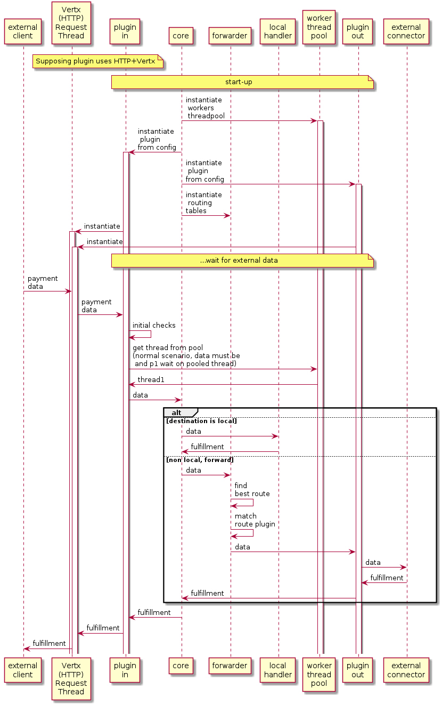

| Interledger |
interledger.org:
open protocol suite for sending distributed payments across different ledgers, not tied to any one company, blockchain, or currency.
INTERLEDGER INTERNET
(ILP) (IP)
ARCHITECTURE "vs" ARCHITECTURE
┌───────────┬────────────────┬─────────────┐
│Application│SPSP HTTP-ILP │HTTP SMTP .. │
├───────────┼────────────────┼─────────────┤
│Transport │ IPR PSK │ TCP UDP │
├───────────┼────────────────┼─────────────┤
│Interledger│ ILP │ IP │
├───────────┼────────────────┼─────────────┤
│Plugin │BLP │ Ethernet │
│ │ILP-over-HTTP │ WiFi │
├───────────┼────────────────┼─────────────┤
│Harware │ledger/connector│host/router │
└───────────┴────────────────┴─────────────┘
Timeline of Interledger Evolution:
(REF: ILP as Settlement vs Clearing System
- Interledger as a SETTLEMENT System (ORIGINAL VIEW)
- ILP cryptography support on settlement ledgers.
- Ledgers will have support for conditional transfers and are fast enough.
- Trust-lines are an unusual type of ledger.
- Interledger as a CLEARING System (CURRENT VIEW September 2017+)
- connectors as central actors acting as "clearing houses"
- NORMAL CASE: connectors have some credit/trustlines relationship with each other. ILP payments go through them
- UNUSUAL CASE: You send every transfer through some ledger
- ILP: try to standardize the clearing protocol
entitities needed by connectors to clear payments: [transfers, fulfillments, rejections, quotes, route broadcasts]
"""settle is completely divorced from clearing payments""".
- The Internet *WITH* VALUE (FUTURISTIC VIEW)
- LAYER 0: ability to send paid paquests(requests), and conditionally paid paquets(requests)
- LAYER 1: ILP Address namespace to route packets
- LAYER 2: Data on top of ILP. Ability to send/receive paid data by just connecting to the ILP network.
(Stream services, PaaS, ....)
- (Evan Schwartz)"""...An argument here is that the reason IPv6 didn't really take off
was because it offered relatively minor improvements over IPv4. In contrast, ILP introduces the ability
to send value as well as information and the ILP Addresses are much more flexible even than IPv6 addresses."""
|
Links of Interest
Tutorials and guides:
Community channels:
Community meetings:
|
Development Links
Testing
- who is in TestNet
http://connector.land/?test=yourdomain.com#/ledgers
(your node will appear if you add it through the '?test=')
- Michael test ledgers: 'gar.michielbdejong.com.' AND 'zup.michielbdejong.com.'
- Testnet-of-Testnets WiKi
- Testnet desing
- e-mail Michiel de Jong
"""As discussed ..., we started building a testnet. You
can now choose your node's home ledger to be part of live network (prefix `g.`) or
testnet (prefix `test.`). We ask everybody who runs a connector to situate their
connector firmly on one side of that divide, so either you connect only between `g.` ledgers, or
you connect only between `test.` ledgers. """
-
michielbdejong@testnet-of-testnets.md
list different testing faucets for
BTC,
XRP,
ETH,
LTC,
ZCASH
and test-case scenarios from simplest to the more complex ones:
- baseline: pay to any testnet
- step 1: baseline connector
- step 2: multi-hop
- step 3: end-to-end
- step 4: routing
- step 5: sender-paychan
- step 6: receiver-paychan
- step 7: bidirectional-paychan
- "Ping" people at Gitter Lobby to set up peering!
|
| building blocks |
Triple entry accountancy
Use of cryptographic techniques to anotate a payment or transfer.
A cryptographic probe is used next to each transfer or ledger annotation
to provide NON-repudiable fact that a payment was initiated by
sender and confirmed by receiver.
It's mostly relevant for distributed transactions between
different ledgers (data bases) controlled by different organizations
with minimal trust amongst them.
Cryptrographic annotations are non-repudiable:
Anyone involved has a "legal" probe that anyone else has executed
or rejected the payment.
- In many scenarios the cryptographic probe just avoids any dispute
(the algorithm does not allow for different states -blockchain).
- In others it helps to quickly identify who is wrong.
("I know it, you know it, I know that you know it, You know that I know that
you know it, ...)
RFC-0015 ILP Address
- Every ledger or blockchain account is asigned a "mostly unique"
ILP Address.
Since there is no central authority goberning ILP address asignation collision between ILP addresses is
possible but that collision will be detected soon since payments are also protected by sha256 hashes.
(An ILP payment arriving to wrong recipients will not match the pre-acorded sha256 hash)
- ILP addresses provide a mechanism to route payments to their intended destination through a
recursive series of ILP network nodes
Destination Addresses are complete addresses that can receive payments, always mapping to
one account in a ledgerAddresses Prefixes are INcomplete addresses representing a group of destination addresses,
or a connector node- See
for more info about different type of addresses, allocation schemes, requirements and REGEX
External Links
Trust-lines / Payment Channels
- Trust-line: Virtual ledger established amongst peers that keeps a
temporal balance that periodically gets sincronised with the (real)
settlement ledger
Trus-lines can be divided into:
- asymmetrical trustline: ledger with two account holders,
and one of them is also the ledger administrator.
- symmetrical trustline: ledger with two account holders,
who collaborate on an equal basis to administer the
ledger between them.
- Payment-channel: A trust-line with the support of
a blockchain or cryptographic system to secure/enhance
payments.
Lightning and
Ripple XPR Channels are two well known examples.
More info and theory about them can also be found in the
Bitcoin wiki
RFC-PR: Payment pointers (and P.R.)
- standardized identifier for accounts that can RECEIVE payments.
- A payment pointer can be resolved to an "https" URL that provides
the location of a payment setup service endpoint
(previous step to payment)
- (design goal): It's used for (pre)payment setup protocols BUT
it should be possible for any new payment setup protocol to "reuse"
payment pointers.
-
The syntax of a payment pointer is (ABNF):
"$" host path-abempty
The corresponding URL will be
"$" host path-abempty
(empty path-abempty is replaced by /well-known/pay)
Examples:
$myWebShop.com/invoice/123 -> https://myWebShop.com/invoice/123
$myWebShop.com -> https://myWebShop.com/.well-known/pay
|
RFC-0003 ILP Protocol
Sender Connector 1 Connector 2 Receiver
STEP 1: Payment SETUP
├ ←── sender and receiver agree on payment ───→ ┤
│ amount, destination address and │
│ condition (=sha256 of fulfillment) │
... ...
STEP 2: START ILP Payment
├── sendData──→ │ │ │
│ ├── sendData──→ │ │
│ │ ├── sendData──→ │
│ │ │←─ fulfillment─┤
│ │←─ fulfillment─┼─ sendMoney──→ │
│←─ fulfillment─┼─ sendMoney──→ │ │
├─ sendMoney──→ │ │ │
Code references
Quoting (protocol)
Allow senders to determine exchange rate between
their assets (for example USD) and the receiver's
assets (for example EUR) before making a payment
Ledger common config. parameters
- decimal_digits: a hint for GUIs, the conventionally displayed number of decimal places for a given asset.
- Precision: number of digits in a number.
- Scale: number of digits to the right of the decimal point in a number.
- Examples:
- 123.45 has a precision of 5 and a scale of 2
- a USD ledger might use a precision of 15 and a scale of 6 and 2 decimal_digits
|
Interledger Payment
- An payment consists of an ordered (in time) list of local transfers between connectors.
- The execution of each local transfer is coordinated by the ILP protocol
- REMOTE TRANSFERS + SETTLEMENT diagram using escrow + cryptoconditions
┌───┬────────────────────────────────┬───┬───────────────────────────────────┐
│ │ LOCAL TRANSFERS @ LEDGER1 │ C │ LOCAL TRANFERFS @ LEDGER 2 │
├───┼────────────────────────────────┤ O ├───────────────────────────────────┤
│ │ │ N │ │
│↓ │ │ N │ │
│T 1│ sender → (amount1) → hold │ E │ │
│I 2│ │ C │ connector → (amount2) → hold │
│M 3│ │ T │ hold → (amount2) → recipient │
│E 4│ hold → (amount1) → connector │ O │ │
│↓ │ │ R │ │
└───┴────────────────────────────────┴───┴───────────────────────────────────┘
↑ ↑ ↑
│ └── amount1 (inbound ammount) must ────┘
│ be greater than amount2 (outbound ammount)
│ for the connector to have any profit
│
└ local transfers 1, 2: PREPARE PHASE
local transfers 3, 4: EXECUTION PHASE
- In the PREPARE PHASE the crypto-condition is "linked" to the payment
and execution is conditioned to receiving the fulfillment
(fulfillment == "cryptographic receipt") before a timeout
- In the universal (non-atomic) mode it's possible for a timeout
in ledger1 in step 4 after step 3 is executed properly in ledger 2.
In that case ledger 2 looses money.
- An external "clock" (notary, orderer, oracle in blockchain nomenclature or transaction manager -DDBB nomenclature-) is needed for full atomic-mode
MULTIHOP CASE
boxes represent local ledger TXs or trust-line rebalance
amt1 = ammount1, amt2 = ammount2, amt3 = ammount3
LEDGER1 CON1 CON2 LEDGER2 LISTENING
| |←TrustLine→| | APP for dst
┌──────────────┐ | | | account
│send→amt1→hold│ | | | |
└──────────────┘ | | | |
+-sendData-→| | | |
| |-sendData-→| | |
| ┌─────────┐ ┌─────────┐ | |
| │IOY-=amt2│ │IOY+=amt2│ | |
| └─────────┘ └─────────┘ | |
| | |-sendData-→| |
| | | ┌──────────────┐ |
| | | │con2→amt3→hold│ |
| | | └──────────────┘ |
| | | |-condition-→|
| | | |←fulfillm---|
| | | ┌──────────────┐
| | | │hold→amt3→dst │
| | | └──────────────┘
| | | |
| | |←fulfillm--|
| |←fulfillm--| |
| ┌─────────┐ ┌─────────┐ |
| │IOY+=amt2│ │IOY-=amt2│ |
| └─────────┘ └─────────┘ |
|←fulfillm--| | |
┌──────────────┐ | | |
│hold→amt1→con1│ | | |
└──────────────┘ | | |
- inbound amount decreases from hop to hop. If it get lower than destination amount in the ILP header payment will be rejected.
- For connector 1/2 to have profit (and mitigate risk if payment is not atomic):
ammount1 greater than ammount2 greater than ammount3
|
Trust relationships in Universal (non-atomic) Mode
-
-extracted from Michiel de Jong's comment on Gitter (Nov 02 19:46)-<
INTERLEDGER ROLES := SENDER, LEDGER, CONNECTOR, RECEIVER
Trust relationships:
sender trusts ledger with its balance
receiver trusts ledger with the payment amount
receiver trusts connector with the opportunity cost
of trying a payment
that may fail *1
connector trusts ledgers with its balances
connector trusts [sender, receiver, connectors]
with the opportunity cost
of trying a payment.
- 'TRUSTLESS CONNECTORS' refers to the fact that senders and receivers
don't trust connectors with any actual value (except opportunity cost in case the connector fails)
|
0022-Hashed Timelock Agreements
(HTLC), which is the Bitcoin/Lightning Network term for conditional
transfers where the conditions and timeouts are enforced by the ledger.
- Hashed Timelock Agreements is a generalization of the idea of a Hashed Timelock Contract
- Hashlocks and timeouts can be enforced by ledgers or they can be upheld by senders
and recipients themselves. (In ILPv4+ a ledger is considered just another connector)
| Conditional Payment Channels(with HTLCs) | Ledger Escrow (using HTLCs) | Simple Payment Channels | Trustlines |
|---|
| Ledger Support Required | High | High | Medium | Low |
| Implementation Complexity | High | Medium | Low | Low |
| Bilateral Risk | Low | Low | Medium | High |
documentation links
|
Error Handling
- Errors may be generated at any point as an Interledger payment is being prepared or by the receiver.
- Connectors that are notified of an outgoing transfer being rejected MUST reject the corresponding
incoming transfer with the same error
- ILP Protocol(Errors Section)
- ilp-error-format
- ilp-error-codes
- Error ASN.1 bin.format
- Non expected errors like "division-by-zero", "null-pointers", "asserts to false", ... will be returned as internal errors (if triggered by
the connector) or application errors (if triggered by external applications handling connectors incomming payments)
Java development Links
JavaScript development Links
|
|
Tunning TIMEOUTS in UNIVERSAL (non-atomic) mode
|
Atomic mode (AM)
- Standard Universal Mode introduces risks to connectors due to race-conditions (See topic "Tunning TIMEOUTS").
- Atomic mode warrants ACID transfers through all the ledgers BUT is not
yet part of the standard ILP RFCs.
Different approached exist:
- Two-phase commit protocol
- Threshold conditions (extension of multisignature conditions).
from Issue #101:
"""(David Fuelling) In atomic-mode, the local-ledger transfers use threshold conditions (among other things) to wrap Preimage conditions used in the ILP packet."""
From Crypo-condtions draft
"""Crypto-conditions elegantly support weighted multi-signatures and
multi-level signatures. A threshold condition has a number of
subconditions, and a target threshold. Each subcondition can be a
signature or another threshold condition. This provides flexibility
in forming complex conditions."""
|
See (Re:) Atomic Payments thread in w3c list started by Ryan Fugger
June, August
Extracted from Stefan Thomas reply:
....we haven't abandoned the ideal insofar ...
we still want any many payments as possible to be atomic ...
we cannot assume that atomic mode will always be available.
... all participants along the payment chain have to have full
unconditional trust in the notary ... in order to be able to use
atomic mode all of the time, there must be at least one notary that
is trusted by all people in the world. Otherwise, we may
run into situations where a liquidity path is available, but no valid
notary can be selected.
It is possible to use multiple notaries in a payment, but that actually
doesn't make the trust problem easier and arguably makes it harder...
then we now need all participants to trust notaries such that none
of the notaries they trust would ever collude with any other notary they trust.
...
It is possible to use atomic mode in the context of a universal mode
payment. Any number of participants can decide to make the transfer between
them subsidiary to some notary. If all the participants do that,
congratulations, the payment is fully atomic.
SO THE IDEA IS TO DEFAULT TO UNIVERSAL MODE AND USE ATOMIC WHERE POSSIBLE
Ripple is currently building a proprietary network for banks that uses
atomic mode internally and universal mode externally.
...XRP Atomic Mode Autodetection (XAMA). The idea is to allow participants in
a payment to detect that XRP is used as one of the hops and then defer to
the outcome of the XRP transaction instead of using their own timeouts,
effectively making the XRP Ledger a de-facto notary.
This can be generalized as a defer-right and defer-left behavior.
Any neighboring pair of participants (:= sender|receiver|connector) can
- by mutual agreement - decide to defer the outcome of their
transfer to whatever the outcome on the ledger right of them or the ledger
left of them.
and from Adrian-Hope reply:
In my experience to date, it's most often people familiar with existing
payment systems that want atomic mode. I think that in time we'll find that
complete end to end atomicity comes at a cost that is not justified for a
lot of payments.
... There are operational costs that must be covered but ... the cost to
move the bytes from A to B to make a payment is certainly nowhere
near the 1% and up that most payments cost to send.
In a world where ILP is a foundational layer ... it's still possible
for someone to send a payment at almost zero cost if they accept the
associated risks.
About New ILP architecture From Adrian Hope
Ledger layer components don't have to understand ILP unless they choose to
re-use the condition for their own local transfer. Ledgers themselves
*never* have to understand ILP.
Remember a ledger layer protocol could use a completely different
conditional payments scheme, like atomic mode ILP, where it takes the
end-to-end condition and creates a new compound condition that depends on
the fulfillment and some notary signature.
|
| CONNECTOR PROTOCOLS |
|
ILP-over-HTTP
Development Links
|
RFC-0023 Bilateral Transfer Protocol BTP (previously Common Ledger Protocol CLP)
- @michielbdejong
"""BTP is just a wrapper around ILP packets that makes it
easier to send them over WebSockets...
... I guess the advantage of HTTP is that it's easier (to implement).
The Advantage of WebSockets is that it allows a client (so a computer
that's not publicly addressable, e.g. a laptop or phone) to be a receiver,
and that some JavaScript-based connectors may only support WebSockets
(but if a JavaScript-based connector wants to peer with a Java-based one,
it would be easy to add ilp-plugin-http)"""
- ilp-plugin-btp issue:
In the readme, we should explain that this plugin implements "BTP/2.0"
(if that's what we want to call it), and is
incompatible with BTP/1.0.
Also, we need to explicitly document (since it's so confusing) that the new
Transfer/Response/Error sequence decreases (settles) the
sender's unsecuredAmount.
This is the opposite of how in BTP/1.0 the Prepare/Fulfill/Reject sequence
used to increase (cause) the sender's unsecuredAmount,
see interledger/rfcs#360 (comment).
It would be easy to oversee this difference, and think that Transfer/Response/Error is just the unconditional version
of Prepare/Fulfill/Reject. Or maybe we should just say "forget everything you think you know about BTP". :)
- Can be used in place of ILP-over-HTTP
- """In lots of scenarios, we don't have an underlying ledger that's fast enough to do every ILP payment on-ledger.
If two parties want to transact, they can send transfers directly to one another with BTP. BTP requires that
the two parties trust one another (up to a limit) for funds that have not yet been settled on the underlying ledger.
If their trust limit is high enough, the two parties can transact without settling on an underlying ledger at all."""
(from Quilt chat: """BTP is just a wrapper around ILP packets that makes it easier to send them over WebSockets.
So our first choice is, do we want Quilt to use WebSockets or HTTP for its API? I would vote for HTTP. """
- C&P from Adrian Hopes comment:
The single-JS-stack/plug-in architecture is limiting in that it is difficult to re-use
these ledger integrations in other stacks.
Fortunately we recently we came to consensus on a common wire protocol to use between nodes
called the Bilateral Transfer Protocol (BTP)."""
- ILP does not depends on BTP
- ASN.1 def
- glossary:
- **BTP Connection**: websocket connection over which BTP packets are
sent. Websockets (as opposed to raw TLS sockets) are used because they provide
message framing and can be used from the browser.
- **BTP Packets**: protocol data units formally defined in ASN.1
- **Peers** are the parties on a BTP connection. Your peer is the party on the
other side of the BTP connection.
- **Bilateral Ledger**: (not to be confused with the **Underlying (settlement) Ledger**)
ledger which the peers on a BTP connection are keeping track of.
When a peer keeping Authoritative State receives a BTP
packet, they process it and adjust their copy of the bilateral ledger.
- **Authoritative State**: authoritative view of the Bilateral Ledger's
state, maintained by one (one peer must the other ) or both of the peers
(they can get into dispute due to timeouts+race-conditions)
- **request is In-Flight**: if the request has been sent out, but no response has been sent yet
- **transfer is In-Flight**: if it has been prepared but not yet fulfilled nor rejected
- **Underlying Ledger**: moves value between the two peers when they settle their balance
- BTP Sub-protocols include optional functionality like ledger
metadata, balance, automated settlement, and dispute resolution.
Doc.Links
Devel.Links
- BTP-toolbox for building and debugging with the BTP
- I'm using the tf-connector repo to set it up. What do we need to do to connect ?
Michiel de Jong @michielbdejong Jan 29 21:42 @rhuairahrighairidh cool! i think you could configure an ilp-plugin-btp instance with { server: 'btp+wss://:@amundsen.ilpdemo.org:1801' } and relationship 'parent'. i haven't tried tf-connector myself yet, though, so let us know if you run into any trouble configuring that!
|
RFC-0010 Connector to Connector protocol CCP
- Protocol for updating conectors routes (vs. handling "money" transfer)
- Connectors discover their peers through out-of-band communication
(configuration files at start-up), or by looking at
https://connector.land and contacting the administrator of
another connector.
- Once peered, two connectors have a bilateral (vs settlement) ledger between them;
this is often a ledger with just two accounts often administered collaboratively
by the two connectors.
-
Extracted from Gitter chat:
"""Q: Regarding the CCP protocol, it's ussing json in the RFC as well as in the ilp-connector implementation.
On the Amundsen connector I see a reference to a binary CcpPacket that doesn't look to be yet used.
Is there any plan to change to Binary, stay with JSON or something else? """
"""A: @michielbdejong Nov 09 16:33
despite the name 'packet', the routebroadcast-over-BTP proposal (which hasn't really been used yet in practice),
is also JSON: https://github.com/interledgerjs/amundsen/blob/master/src/protocols.js#L59
however, the updated proposal is this:
https://github.com/interledger/interledger/wiki/Interledger-over-BTP#changes-to-ccp-sub-protocol
(basically, define the 'custom' protocol, which adds a level of nesting)
Extracted from the wiki:
Changes to ccp sub-protocol
To be decided, but probably the ccp sub-protocol will be deprecated
in favor of the new custom sub-protocol, to be used with contentType
MIME_APPLICATION_JSON, and exactly like currently implemented in
https://github.com/interledgerjs/ilp-connector
version 21.1.10. See an example of the custom field in
https://github.com/interledger/rfcs/blob/master/0021-plugin-rpc-api/0021-plugin-rpc-api.md#send-request-routing.
This is for the 'routes' packet, but the 'request full table' packet gets deprecated, as it will now
piggy-back on route broadcasts, like implemented in
https://github.com/interledgerjs/ilp-connector/commit/7e4189de27640e02de336331ff6c4f6a617a6fed
|
| TRANSPORT PROTOCOLS |
Interledger Payment Request (IPR)
- End-to-end transport protocol in which the receiver of an Interledger payment first
communicates a request for payment to the sender. A method is proposed for receivers
to generate payment requests such that they can verify incoming payments without storing
all outstanding requests.
- This protocol is binding (non-repudiable). See PSK for an alternative non-binding(repudiable) protocol.
Document. Links
Development Links
- ILP Clientincludes an IPR client
@src/lib/ipr.js
-
Java PSK End-to-end test
byte[] encodedPayment = senderCodecContext.write(
InterledgerPayment.class, paymentToSend);
byte[] encodedCondition = senderCodecContext.write(
Condition.class, conditionToSend);
--------------------------------------------------------
RECEIVER
--------------------------------------------------------
STEP 1: create PSK IPR (Interledger Payment Request)
CodecContext receiverCodecContext =
CodecContextFactory.interledger();
final String SECRET = "MY_SECRET";
Build InterledgerPaymentRequest at receiver from [
Fulfillment(receiverContextBuildingIpr(seed)
payment(dstAccount, dstAmount, encryptedPSKMessageData) ]
STEP 3 - PARSE PAYMENT AT RECEIVER
InterledgerPayment decodedPayment =
receiverCodecContext.read(
InterledgerPayment.class, encodedPayment);
Condition decodedCondition = receiverCodecContext.read(
Condition.class, encodedCondition);
PskMessage encryptedMessage = receiverCodecContext.read(
PskMessage.class, decodedPayment.getData());
// Load PSK Context based on token extracted of
// address in payment packet
PskContext receiverContext =
PskContext.fromReceiverAddress(
SECRET, decodedPayment.getDestinationAccount());
PskMessage decryptedPskMessage =
receiverContext.decryptMessage(encryptedMessage);
-------------------------------------------------------
-------------------------------------------------------
SENDER
-------------------------------------------------------
/* STEP 2: PARSE IPR AT SENDER */
CodecContext senderCodecContext =
CodecContextFactory.interledger();
InterledgerPaymentRequest decodedIpr =
senderCodecContext.read(
InterledgerPaymentRequest.class, encodedIpr);
InterledgerPayment paymentToSend =
decodedIpr.getInterledgerPayment();
Condition conditionToSend = decodedIpr.getCondition();
// Decode PSK message
PskMessage message = senderCodecContext.read(
PskMessage.class, paymentToSend.getData());
message.getData()
message.getEncryptionHeader()
message.getPublicHeaders(
PskMessage.Header.WellKnown.PAYMENT_ID)
PskMessage decryptedPskMessageAtSender =
(PskContext.fromPreSharedKey(psk)).decryptMessage(message);
---------------------------------------------------------
|
Pre-Shared Key(PSK) Protocol v2
- Update v2 changes over PSK v1
- Motivation for changing PSK2 Draft 1
Draft 1 of PSK2 attempts to support both streaming and chunked payments.
However, it includes some features that are only useful for chunked payments and
does not include some others that would be needed for a proper chunked
payments implementation.
Based on a conversation with @sharafian, this proposes narrowing the scope of PSK2
while making it easier to build use cases like streaming and chunked payments on top.
- End-to-end non-interactive transport protocol, used by the sender
and receiver of an ILP payment in which the sender chooses the payment
amount and generates the fulfillment/condition without communicating
with the recipient
- This protocol is NOT binding since the sender can generate the fulfillment
and so he can NOT probe such fulfillment was actually generated by receiver.
ILP Payment Request must be used in such cases.
- The entirety of the PSK data, including public headers, encrypted
private headers, and encrypted private data, is encoded into an octet-stream
that forms the data portion of the ILP Payment Packet
- The PSK data is authenticated via AES-256-GCM in addition to the HMAC-SHA-256 which authenticates the full ILP payment
Documentation Links
Development Links
|
| APLICATION PROTOCOLS |
SPSP
Before starting an ILP payment senders ("wallets") needs to know the destination ILP address and
the amount. SPSP is one high-level protocol used for that purpose.
- Simple Payment Setup Protocol to create "input" condition to initiate an ILP payment.
- The flow of payment can be similar to:
client -> webshop: browse catalog and click on pay
webshop -> client: SPSP payment pointer
client <-> payment pointer: Agree payment-data:
[ILP destination address , amount]
-- ILP Payment --
client -> local connector: sendData(payment-data)
...
client <- local connector: fulfillment (payment receipt) OR ILP error
- SPSP may be used by end-user applications, such as a digital wallet with a user interface
for the sender to initiate payments.
- SPSP is NOT enforced and other protocols and/or procedures can be used
- Any SPSP receiver will run an SPSP server and expose an HTTPS endpoint called the SPSP payment pointer.
- SPSP uses the Pre-Shared Key v2(PSK2) transport protocol for condition generation and data encoding
- SPSP ussually is "good enough" because the payment sender can present the
fulfillment to connectors to probe that the payment was recieved by the recipient even
if it wasn't ... but he will not win much with that. He will just loose his money
The receiver can not probe the opposite but he just received money for free.
IPR is just needed in some "corner" scenarios when the receiver could be fined
because un-intentionally he received the money and he was obligated
to declare the error to some authority.
IPR is "slightly" safer, 100% non-repudiable, but takes more message rounds
between sender and receiver and so it less suitable for small payments.
- custom mime-type: "application/spsp+json"
Docu.Links
Development links
TESTING: Launch SPSP service
|
Fragment/Stream payments
|
RFC PR ILQPv2
|
| JS and NodeJS |
ilp-plugin-payment-channel-framework
Framework for creating payment-channel based ILP ledger plugins,
including a framework for attaching on-ledger settlement mechanisms.
"""Any ledger protocol author can definitely fork BTP, or
design something completely different from scratch.
However, as we've found writing ledger plugins, it's much easier to
use something like the payment channel framework than implement everything
yourself. That framework will be changed to use the BTP as the base protocol
and allow individual plugins to add custom messages (in the same way you can
add custom RPC methods now) and custom data to existing messages (in the same
way you can add custom arguments to existing RPC calls now). The benefit of
allowing for multiple plugin types is that we don't have to standardize this
layer. But as we've seen from experience it's way easier to implement plugins
if you can reuse something like that framework that does 80% of the work for
you (and avoids common gotchas)"""
From RFC PR263
GitHub
|
REF: ILP Architecture
p>Early on in the project the goal was to define a standard interface for "ledgers" which would abstract away the functions of a particular ledger and expose the functions required of a sender, receiver or connector. Given that the technology of choice for the majority of contributors at the time was Javascript, this was done in Javascript and described in IL-RFC 4 the Javascript Ledger Plugin Interface.
Subsequently a number of Javascript plugins have been developed that expose this interface including:
|
Connector Shard
"As pioneered by @justmoon in the ilp-connector-shard,
this implementation assumes that each account will be managed
by a single process. This allows the balance to be cached and
updated in memory and enables using fast, single-process databases
such as LevelDB or RocksDB."
simple, good performance, easy to set up, easy to extend/reimplement,
robust against DoS attacks, scales to many users,
Composable (could be run with/without UI, static routes, etc,..)
|
ILP-Butterfly Minimal browser ILP/SPSP client
Fully client-side app for sending Interledger payments from the browser.
It uses the ILP Client and the
ILP Plugin RPC
to send Interledger payments from the browser.
|
|
| JAVA |
HYPERLEDGER QUILT
- Interfaces and specs (common structs to all
implementations) for different ILP compliant systems
- crypto-conditions(only preimage (fulfillment) to sha256 (condition) is used for ILPv4 but many others exists for future or non-standard implementations -multisignature, ... -
- ilp-core Main ILP classes ilike
ILP Address,
ILP Exceptions,
ILP Packet,
SPSP, PSK, ILQP, ...
|
ilp-EverConnector
Java Connector using CompletableFutures and VertX framework to provide "NodeJS-like" async behaviour.
Configuration:
Data flow Sequence diagram:

|
|
| BLOCKCHAINS |
|
ILP over XRP(Ripple "XRP" Network) API
Ripple Network is a real-time international gross settlement system
(gross vs net settlement system compared),
used for currency exchange and money transfer network.
Ripple is based on the idea "secure, instant and nearly free global financial transactions of any size with no chargebacks."
The Ripple protocol enables the instant and direct transfer of money between two parties. As such the protocol can
circumnavigate the fees and wait times of the traditional correspondent banking system.
Ripple relies on a common shared ledger that has its contents decided on by consensus, and which is a distributed
database storing information about all Ripple accounts.
Docu. Links
Devel. Links
|
ILP over Ethereum
|
BTC/LTC/ZCASH
|